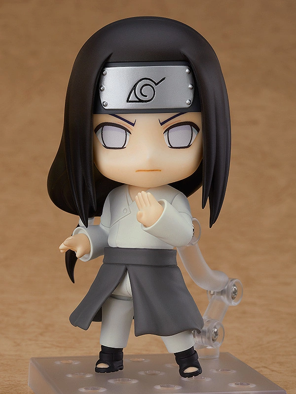
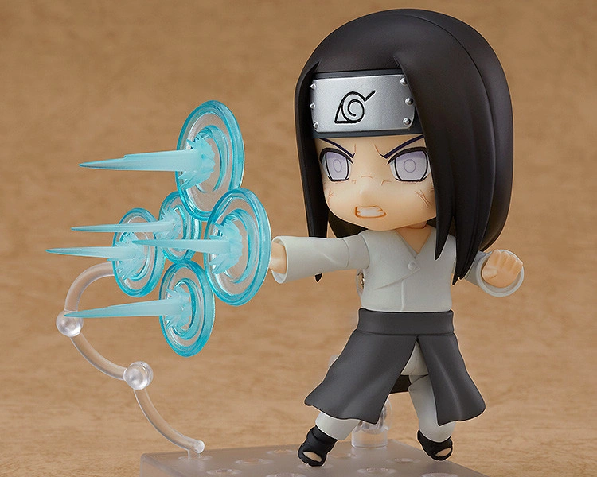

Neji Hyūga (日向ネジ, Hyūga Neji) was a shinobi of Konohagakure's Hyūga clan. Though a prodigy even by the Hyūga's standards,
Neji was a member of the clan's branch house; no matter how skilled he became, he would always be in service to the Hyūga's main house,
a fact that convinced him fate was predetermined. After experiencing Naruto Uzumaki's refusal to be limited by such an ideology,
Neji realised his fate was what he chose it to be, and as a member of Team Guy he sought the strength necessary to make the future he wanted
for his family and friends, and ultimately sacrificed his life to protect the very same person who taught him about the freedom of one's
choice of fate, Naruto.


"From the popular anime series ""Naruto Shippuden"" comes a fully articulated Nendoroid action figure of Neji Hyuga!
He comes with three face plates including a standard expression, a combat expression from when he activates his Byakugan and a composed
smiling expression.
An 8 Trigrams sheet that can be placed on the stand base and an 8 Trigrams 64 Palms effect part are included. Enjoy combining his parts to create
all kinds of poses from the series! Be sure to display him with Nendoroid Hinata Hyuga (sold separately) and other Nendoroids from the Naruto Shippuden
Nendoroid series!".